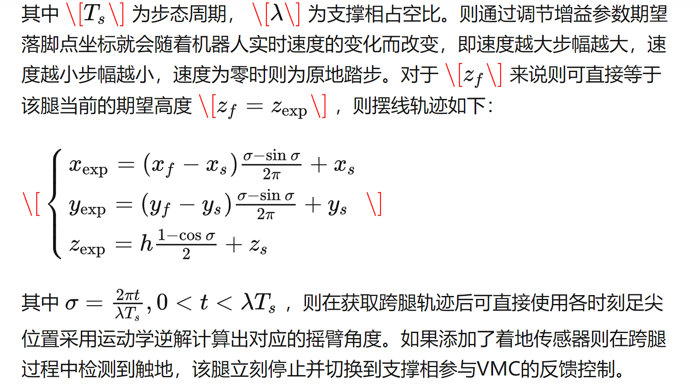
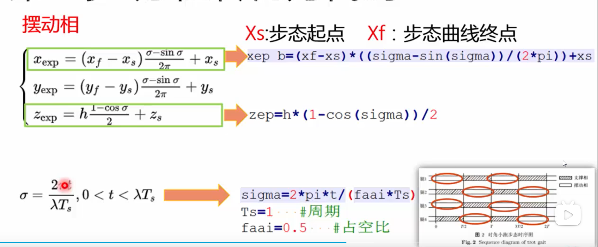
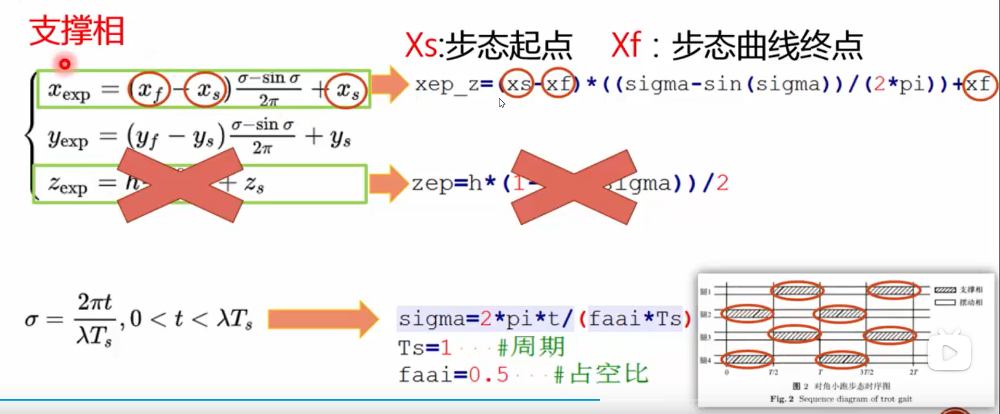

<!DOCTYPE lake>
<blockquote data-lake-id="u824fbd1d" id="u824fbd1d"><p data-lake-id="ud38f8120" id="ud38f8120"><span data-lake-id="u2efc7afc" id="u2efc7afc">狗腿的摆线可以使用</span></p><p data-lake-id="u114f9b5a" id="u114f9b5a"><a data-lake-id="u75b6ad0d" href="https://zhuanlan.zhihu.com/p/69869440" id="u75b6ad0d" rel="noopener noreferrer" target="_blank"><span data-lake-id="u8b491aa2" id="u8b491aa2">https://zhuanlan.zhihu.com/p/69869440</span></a></p></blockquote><p data-lake-id="u2c96b4b9" id="u2c96b4b9"></p><blockquote data-lake-id="ud7406ae3" id="ud7406ae3"><p data-lake-id="u2c971147" id="u2c971147"><span data-lake-id="u8bcc716d" id="u8bcc716d">8自由度机械狗没有y方向的移动</span></p><p data-lake-id="uad9c4485" id="uad9c4485"><span data-lake-id="uf800a58e" id="uf800a58e">x方向移动,分成摆动相和支撑相</span></p></blockquote><p data-lake-id="u91290243" id="u91290243"></p><p data-lake-id="u0e90450e" id="u0e90450e"></p><p data-lake-id="u6e71bc13" id="u6e71bc13"><strong><span data-lake-id="ub2e0c12c" id="ub2e0c12c">小跑步态规划实现</span></strong></p><span class="yuque-card-unsupported">[codeblock]</span>